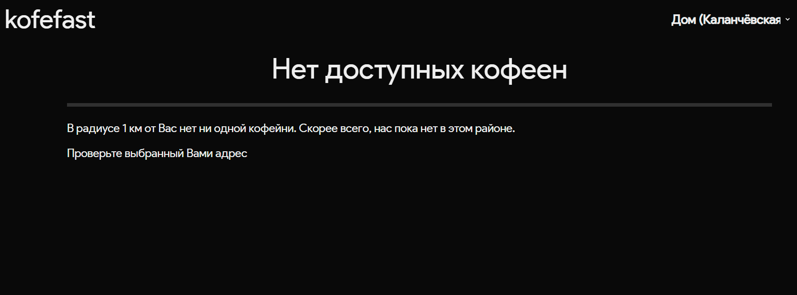
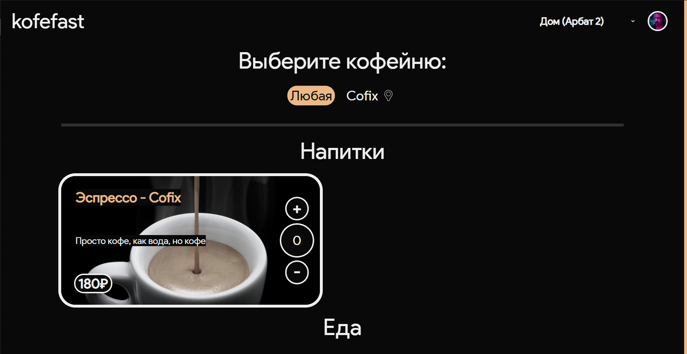
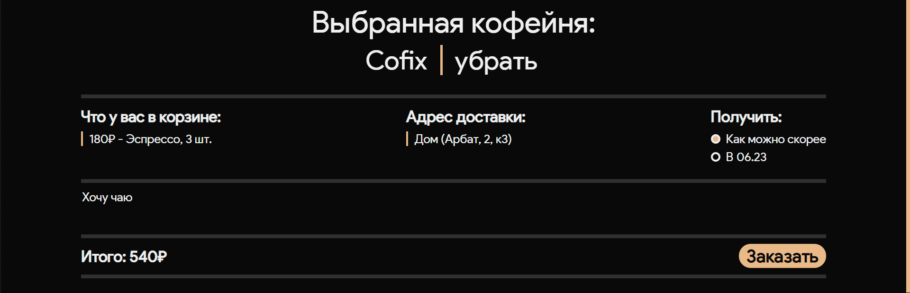
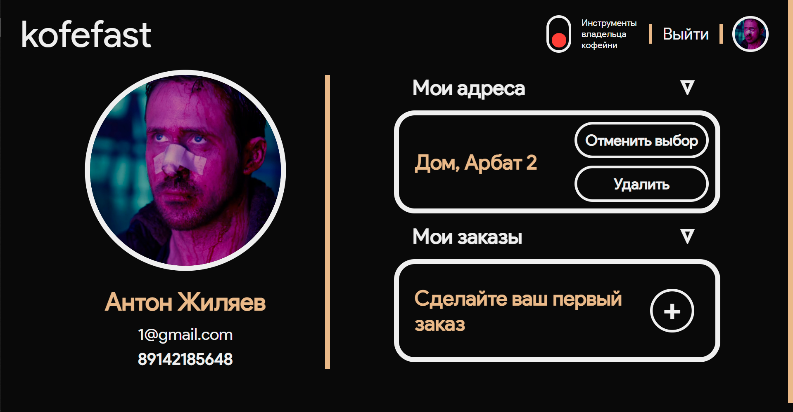
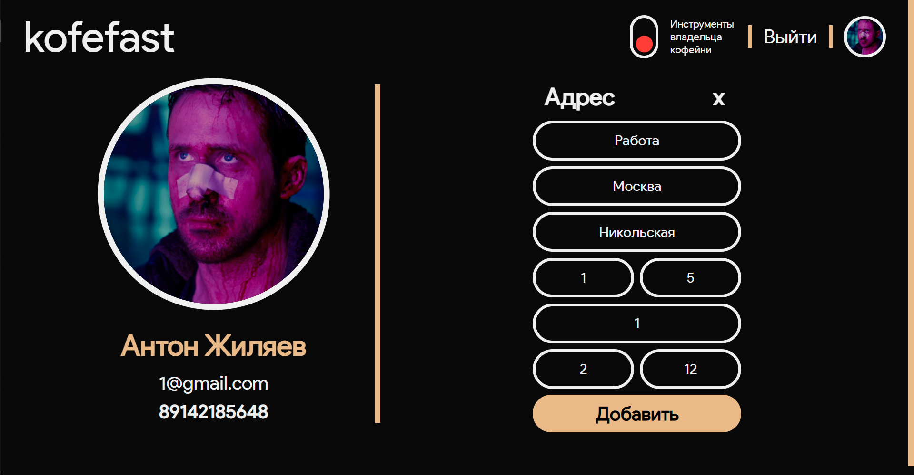

Интерфейс сайта¶
Главная страница¶
Header страницы содержит ссылку на index.html, возможность выбрать адрес, добавить адрес или перейти в личный кабинет
Кофейни будут отображаться, если они имеют как минимум одно заведение в 1 км от пользователя
Сообщение об отсутствие кофеен:
При наличие кофейни рядом вы увидите следующее:
Кнопки ‘+’ ‘-’ отвечают за добавление/удаление элемента из корзины¶
После добавления предмета в корзину, кофейня-провайдер закрепляется как выбранная
Интерфейс корзины:
В корзине есть¶
Список товаров
Выбранный адрес
Время доставки
Как можно скорее
Через 15 от текущего времени
Поле для ввода комментария
Общая стоимость корзины
Кнопка заказать
После совершения заказа, вам на почту придет письмо, сообщающее об успешном заказе через наш сервис
Личный кабинет¶
Интерфейс личного кабинета
Header страницы содержит ссылку на index.html, возможность выйти из аккаунта, перейти в режим владельца кофейни (если вы являетесь владельцем кофейни)
Страница поделена на две части:
Функции изменения профиля
Просмотр сведений об аккаунте/кофейне
Смена параметров профиля¶

Имеется возможность установить картинку профиля, картинка должна иметь формат .png, .jpg, .jpeg
Добавление нового адреса
!Обязательно проверяйте грамматику в адресе; не подписывайте ул., д. и тд; буквы е и ё - разные буквы!
Изменение кофейни¶

!на момент релиза функционал объемов/добавок отключен!